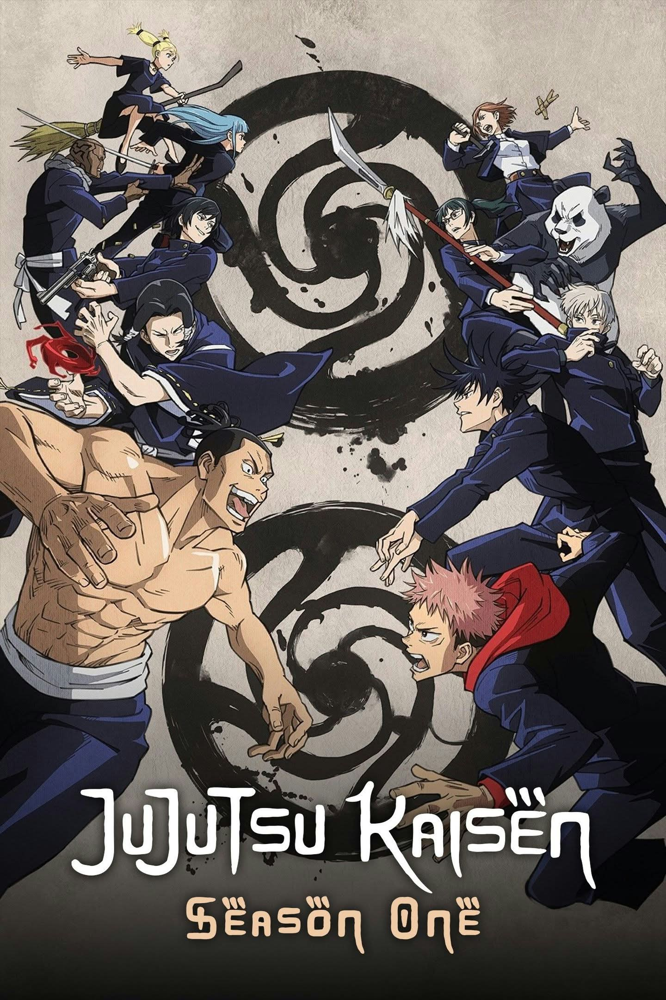

UNOFFICIAL FAN STORY · CHAPTER 01
Jujutsu Kaisen
A student joins a small team investigating strange marks around the city, learning that calm thinking and teamwork can face even the most unsettling unknown.
Chapter One: A New Beginning
At 7:13 every evening, the lights in the old station flickered in the shape of a crooked smile. Yuji noticed it while walking home and reported it to the campus club that studied unusual phenomena.
The team arrived with chalk, cameras, and a plan. They discovered that the marks were not spreading randomly; they formed a map leading to a sealed maintenance room. Inside, a broken signal device was bouncing power through the station’s old wiring.
When the lights began to flash wildly, Yuji held the door while his friends shut down the circuit. The shadow on the wall vanished, leaving only a harmless reflection.
They logged the discovery instead of boasting about it. The strangest problem, they learned, often becomes manageable when everyone contributes one piece of the answer.
This is an unofficial, original fan-made story and is not affiliated with the official creators or publishers.